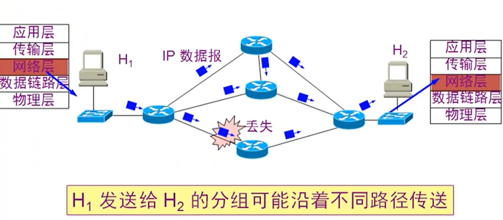
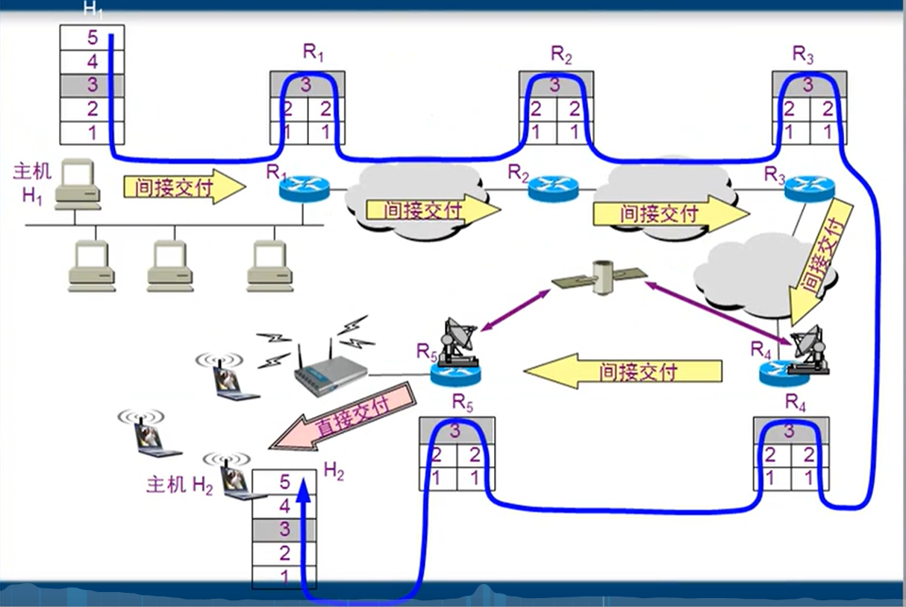
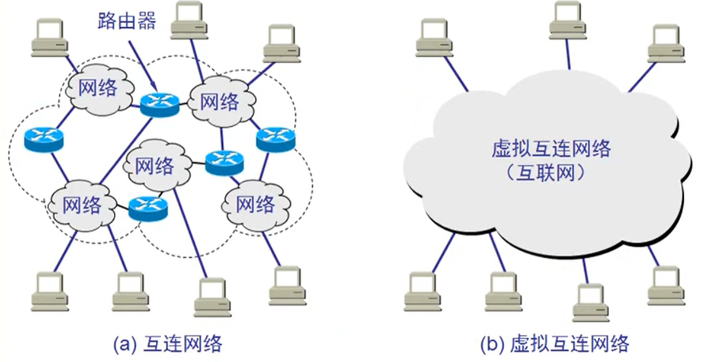
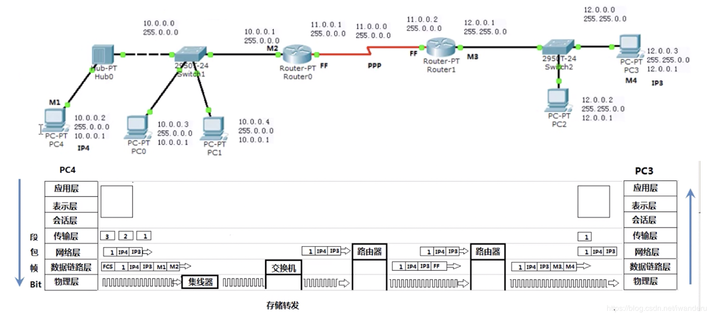
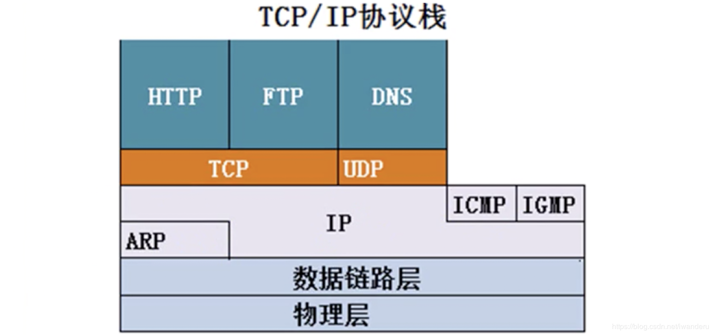

IOS 网络层概述 @
网络层提供的服务 @
负责在不同网络之间尽力转发数据包
- 基于数据包的 IP 地址转发
- 不负责丢失重传
- 不负责顺序
数据包在 Internet 中传输 @

路由器是三层设备：能看到网络层的 IP 地址来选择路径

互联网与虚拟互联网 @
互联网互联的设备 @

- 物理层中继系统：转发器(repeater)，类似集线器
- 数据链路层中继系统：网桥或桥接器(bridge)
- 网络层中继系统：路由器(router)
- 传输层/应用层中继系统：网关(gateway)
中间设备又称为中间系统或中继系统(relay). 网关就是路由器接口的地址。一般是本网段第一个地址。
网络需要解决的问题 @
- 不同寻址方案
- 不同最大分组长度
- 不同网络接入机制
- 不同超时控制
- 不同差错恢复方法
- 不同状态报告方法
- 不同路由选择技术
- 不同用户接入控制
- 不同服务
- 不同管理与控制方式
虚拟互联网将复杂的互联网抽象成一个网络，这样用户只需要关心如何接入互联网而不需要关心互联网的复杂性，简化了问题模型。
网络设备和 OSI 参考模型的关系 @
PC4 向 PC3 传输数据 @

发送端： @
- 应用层准备要传输的数据文件；
- 传输层把数据进行分段并编号；(数据段)
- 网络层把传输层的每一个数据包增加原 IP 地址和目标 IP 地址；(数据包)
- 数据链路层把每个数据加上 MAC 地址；(数据帧)
- 物理层把数据帧变成数字信号(bit 流)
如何通过 Mac 地址进行转发数据:
- 使用本计算机地址的子网掩码，判断本地址和目标地址分别在哪个网段，若在同一个网段(不过路由器)，通过 ARP 协议广播的方式得到目标 IP 地址的 MAC 地址，然后就能封装出一个数据帧；
- 如果子网掩码不是一个网段(与运算)，通过 ARP 协议广播的方式得到路由器(网关)的 MAC 地址，然后把数据通过交换机发送到路由器 M2，路由器 M2 在通过广播的方式得到目标 IP 地址与 Mac 地址。
因为 M2 和 M3 是点对点通信，没有别的主机，所以它们之间的 MAC 地址就是 FF。
接收端： @
- 交换机 Hub0 接收 bit 流，能对数据进行存储转发。它根据数据帧的 MAC 地址，确定数据是从哪来的，要去哪。
- 路由器 M2 获取交换机的数据包，识别其中的 IP 地址，根据路由表选择出口，它无法识别数据段内容。
- 路由器 M2 到 M3 是点对点通信，遵守 PPP 协议。
- PC3 收到 bit 流后，数据链路层发现 MAC 地址是自己的，去掉 MAC 地址给它的网络层，网络层去掉 IP 地址给传输层，传输层把数据给应用层，应用层把各个数据拼接起来，进而得到文件。
路由器与交换机、集线器会不会中病毒？ @
不会，因为路由器不能识别数据内容，只进行数据的传递，而交换机与集线器分别工作在数据链路层与物理层，更不会中病毒。但病毒可以影响网络设备的正常工作，例如频繁广播发送数据，占用带宽影响效率，使这些设备一直处于忙碌状态。
ARP 协议 @
TCP/IP 协议层次关系 @

ARP 协议为 IP 协议提供服务，IP 协议为 ICMP 与 IGMP 协议提供服务。
ARP 协议功能 @
将 IP 地址通过广播，目标 MAC 地址是 FF-FF-FF-FF-FF-FF，解析目标 IP 地址的 MAC 地址，只能在本网段使用，ARP 是解决同一个局域网上的主机或路由器的 IP 地址和 MAC 地址的映射关系。
如果所找的主机和原主机不在同一个局域网上，那么就要通过 ARP 找一个位于本局域网上的某个路由器的 MAC 地址，然后把分组发送给这个路由器，让这个路由器把分组转发给下一个网络，剩下的工作就由下一个网络来做。
从 IP 地址到 MAC 地址的解析是自动进行的，主机的用户对这种地址解析过程是不知情的，只要主机或路由器要和本网络上的另一个已知 IP 地址的主机或路由器进行通信，ARP 协议就会自动地将该 IP 地址解析为链路层所需要的 MAC 地址。
arp -a 可以查看本地解析过的 Mac 表缓存。 逆地址解析协议(RARP)：只知道自己 MAC 地址就能获得其 IP 地址。
ARP 欺骗 @
ARP 欺骗的运作原理是由攻击者发送假的 ARP 数据包到网上，尤其是送到网关上。其目的是要让送至特定的 IP 地址的流量被错误送到攻击者所取代的地方。因此攻击者可将这些流量另行转送到真正的网关（被动式数据包嗅探，passive sniffing）或是篡改后再转送（中间人攻击，man-in-the-middle attack）。攻击者亦可将 ARP 数据包导到不存在的 MAC 地址以达到阻断服务攻击的效果，例如 netcut 软件。
例如：某一的 IP 地址是 192.168.0.254，其 MAC 地址为 00-11-22-33-44-55，网上上的计算机内 ARP 表会有这一笔 ARP 记录。攻击者发动攻击时，会大量发出已将 192.168.0.254 的 MAC 地址篡改为 00-55-44-33-22-11 的 ARP 数据包。那么网上上的计算机若将此伪造的 ARP 写入自身的 ARP 表后，计算机若要透过网上网关连到其他计算机时，数据包将被导到 00-55-44-33-22-11 这个 MAC 地址，因此攻击者可从此 MAC 地址截收到数据包，可篡改后再送回真正的网关，或是什么也不做，让网上无法连线。
防止 ARP 欺骗的两种方法 @
- 静态绑定，使用 arp -s 命令进行静态绑定，静态绑定后双方计算机通信不在使用 ARP 协议进行动态获取，可直接进行对目标计算机的通信。可将脚本命令编辑成.bat 脚本，用 gpedit.msc 打开组策略，在开机登陆中添加该脚本，则脚本代码开机自动启动。
- 使用 ARP 防火墙进行防御。